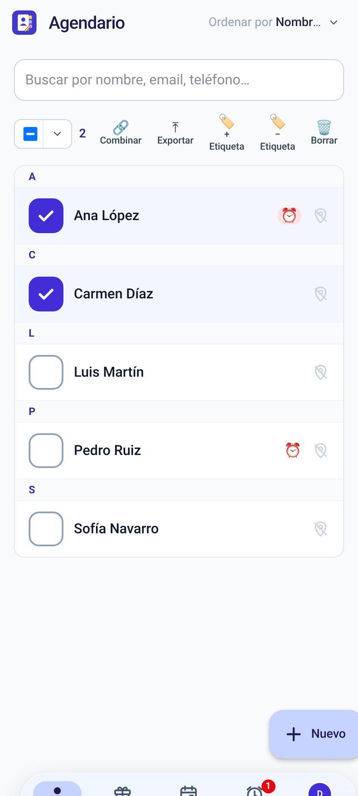
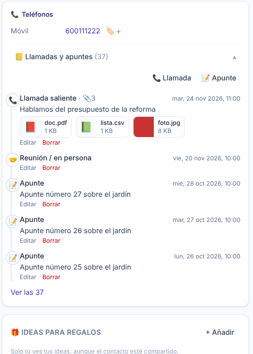

9Novedades de las versiones 1.2
Esta versión trae cambios en la lista de contactos, una pantalla propia para los recordatorios, adjuntos en las llamadas, la pantalla «Últimas notas», la sincronización con Todoist y los avisos en el coche (Android Auto).
⚠️ Actualiza el servidor y la APK: los adjuntos durante la llamada, la selección por pulsación larga y Android Auto son de la app nueva.
Seleccionar contactos en la app (pulsación larga)
- En la app ya no hay casilla a la izquierda de cada contacto.
- Mantén pulsada la foto de un contacto un segundo: el móvil vibra y la foto se cambia por un cuadro marcado. Aparece arriba la barra de acciones (combinar, exportar, etiquetas, borrar).
- Con la selección en marcha, todas las fotos se ven como cuadros: toca el cuadro de cada contacto para marcarlo o desmarcarlo. Tocar el nombre sigue abriendo la ficha.
- Si desmarcas todos, se sale de la selección: para empezar otra vez, vuelve a mantener pulsada una foto.
- En la web se sigue usando la casilla, como antes.
Recordatorios: pestaña propia e icono en la lista
- Los contactos con algún recordatorio pendiente llevan un ⏰ en su fila; con fondo rojo si alguno ya ha vencido.
- La pestaña Recordatorios está siempre en la barra de abajo de la app, entre Fechas y tu usuario (en la web, en el menú de arriba), con el número de vencidos en rojo.
- Bola en el icono (1.2.1): si hay recordatorios pasados de fecha, un aviso «⏰ N recordatorios pasados de fecha» pone el número sobre el icono de Agendario. Y a las 9:00, si hay cumpleaños en los próximos 7 días sin regalo comprado, avisa «🎂 N cumpleaños esta semana sin regalo» (también suma a la bola).
- Fechas se queda con Eventos y Efemérides.

Dos contactos marcados en la app.
Adjuntos en las llamadas y apuntes
Las anotaciones de una llamada (y los apuntes, reuniones y mensajes) pueden llevar archivos: fotos (JPG, PNG, HEIC, WebP), PDF, Word, Excel, PowerPoint, LibreOffice, TXT/CSV y audios (MP3, M4A, OGG). Hasta 25 MB por archivo y tantos como quieras.
- Después de la llamada, en la web o en la app: en la ficha, Llamadas y apuntes → Editar (o al crear uno nuevo) y 📎 Adjuntar. Los archivos se suben al pulsar Guardar.
- Durante la llamada (app): en la burbuja de notas hay dos botones nuevos, 📷 para hacer una foto con la cámara del móvil y 📎 para elegir una foto o un archivo. Al terminar vuelves a la nota; los adjuntos se suben solos a esa llamada al colgar (si no hay conexión, se reintenta; los que no se hayan podido subir en 24 horas se descartan).
- Las fotos salen con miniatura; el resto, con un icono según el tipo. Tocando uno se abre (en el móvil, con la app que corresponda).
- Los adjuntos son privados, como las notas: solo los ve quien hizo la llamada. Entran en las copias de seguridad y se borran al borrar la llamada.
- Si la llamada era de un número que aún no está en tu agenda, la nota y sus adjuntos pasan a la ficha en cuanto guardas el número.

Llamada con tres adjuntos en la ficha (web).
Últimas notas
- En el menú (en la app, en Más): 📝 Últimas notas.
- Todas tus anotaciones de todos los contactos, de la más reciente a la más antigua, agrupadas por día. Se cargan más al bajar.
- Cada nota muestra el contacto, el tipo, la hora, el texto (toca para verlo entero) y sus adjuntos. Editar la cambia ahí mismo; tocar el nombre abre la ficha.
- Filtros por tipo (llamadas, reuniones, mensajes, apuntes), por etiqueta del contacto y buscador en el texto.
Recordatorios en Todoist
Cada recordatorio puede crear una tarea en Todoist con el texto, la fecha y hora, el contacto y dos enlaces: Abrir en Agendario (la web) y Abrir en la app del móvil. Va en los dos sentidos: completar, cambiar o borrar en un lado se refleja en el otro (Agendario revisa Todoist cada 5 minutos).
- En Todoist: Ajustes → Integraciones → Desarrollador → Copiar clave de API.
- En Agendario: Ajustes → Sincronización → Todoist, pega la clave y pulsa Conectar Todoist. Te pregunta si mandar también los recordatorios pendientes que ya tienes.
- Elige el proyecto donde van las tareas (por defecto, la bandeja de entrada), la etiqueta (por defecto «agendario») y revisa la dirección de Agendario para los enlaces.
- Con la casilla Avisos de Agendario en el móvil decides si siguen sonando los avisos de la app para los recordatorios enviados a Todoist o si prefieres que te avise solo Todoist.
- Si borras la tarea en Todoist, el recordatorio sigue en Agendario y queda marcado como desvinculado.
- Revisar ahora trae los cambios sin esperar; Desconectar deja tareas y recordatorios donde están, sin enlace.
- La clave se guarda solo en tu servidor (y en sus copias cifradas); la web nunca la vuelve a mostrar.
Avisos en el coche (Android Auto)
Agendario no tiene pantalla propia en el coche (Android Auto solo permite ciertos tipos de apps), pero sus avisos sí aparecen, se leen en voz alta y se contestan dictando:
- Nota al colgar: el aviso de la llamada sale en el coche; contesta hablando y lo que digas se guarda como nota de esa llamada.
- Recordatorios: el coche los lee; Hecho (marcar como leído) lo completa y, si contestas con la voz, se guarda como apunte en la ficha del contacto.
Como la APK no viene de Google Play, hay que dejar que Android Auto la use (una sola vez):
- En el móvil, abre los ajustes de Android Auto (Ajustes → Dispositivos conectados → Preferencias de conexión → Android Auto, según el móvil).
- Baja hasta Versión y tócala unas 10 veces hasta que pregunte si activar los ajustes de desarrollador; acepta.
- En el menú ⋮ de arriba, entra en Ajustes de desarrollador y activa Fuentes desconocidas.
- Desconecta y vuelve a conectar el móvil al coche.
💡 Para probar sin coche existe el «Desktop Head Unit» de Google (para desarrolladores). Si no ves los avisos, revisa que las notificaciones de Agendario estén permitidas en el móvil.
Correcciones de la 1.2.1
- Editar ideas de regalo: botón ✏️ en cada idea (en la ficha y en la pestaña Regalos) para cambiar el nombre, el enlace, el precio o las notas, también si ya está comprada.
- Efemérides: los títulos largos ya no ensanchan la pantalla del móvil.
- La barra de navegación de abajo se queda fija en Fechas y Efemérides, como en el resto de pantallas.
⚠️ Adjuntos de hasta 25 MB y Nginx Proxy Manager: en el Proxy Host de Agendario, pestaña Advanced, pon client_max_body_size 30m; (antes se recomendaba 20m, que corta los archivos de más de 20 MB).